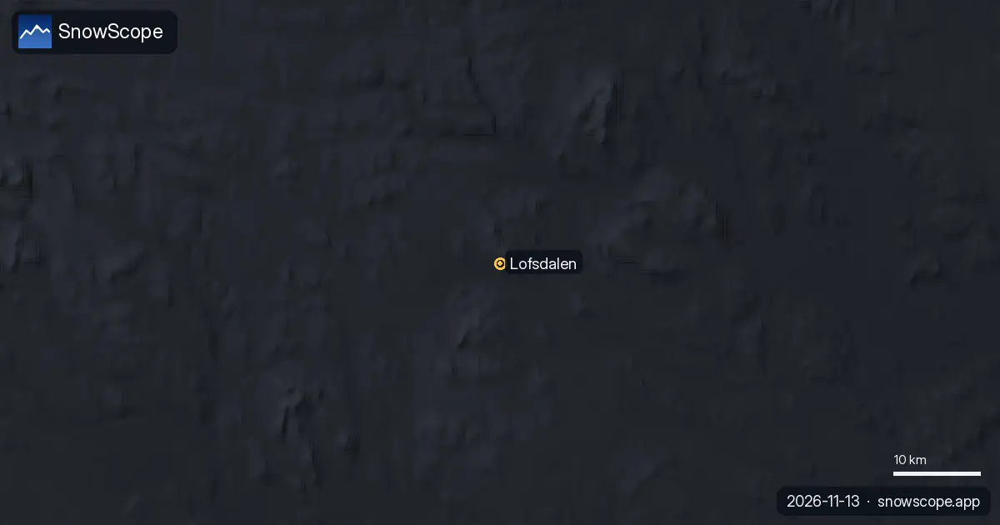
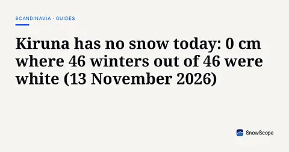

Lofsdalen snow report: 6 cm at the high station, a cold week ahead (14 November 2026)
Lofsdalen sits higher and further north than many Swedish ski valleys, which explains why its thin November cover is holding firm. On 13 November, weather stations around the resort logged 6 to 8 cm at low elevations, and the snow there is real: temperatures are cold enough to keep it safe this week. The resort is closed until 11 December, but those who know the forest roads and valley trails can already walk or skin.
See the live snow forecast for Lofsdalen in the SnowScope appSnow depth, powder alerts and the 3D map, free.

How the snow arrived
Until 10 November, the land here was bare. Then a low-pressure system brought snow on each of the next three days, with the heaviest fall on 11–12 November. By measuring tape at the nearest station, Häggberget at 682 m (15 km away), the total since 1 November was 6 cm on the morning of 12 November. Hedeviken, further south and lower at 420 m, had 8 cm by 13 November; Särna, at 425 m and further east, held 7 cm. This scatter reflects the valley's mix of shelter and wind, but all three sites agree: there is a real base now, not a dusting.
The key to holding this cover is altitude and latitude. Lofsdalen sits at 629 m in the base and climbs to 1106 m. The air mass over central Härjedalen in mid-November is too cold for the mild Atlantic winds to penetrate easily. So what fell stayed as snow, and next week's forecast is for the same cold, dry conditions.

What the next seven days will bring
SnowScope forecasts about 7 cm across the resort over the seven days from 14 to 20 November. The uncertainty range is 6 to 8 cm, so this is not a big dump, but it is reliable. Almost none of this will fall as rain; the snow line will stay around 320 to 330 m, far below even the base station. The air stays cold, so each new centimetre will bond and stay.
Other forecasts in the region range from 10 to 19 cm at Lofsdalen's height, so there is some scatter. But all agree that snow will reach the ground. By 21 November the valley should hold somewhere between 10 and 15 cm, depending on where you measure. The mid-slope elevations of the resort will likely see the depth settle toward the middle of that range.
How this compares with past Novembers
Lofsdalen's 46 winters of record (1980–81 to 2025–26) show that by 14 November the usual depth at the base is 12 cm. By 30 November it climbs to 24 cm, and by 15 December to 32 cm. Right now, at 6 to 8 cm, the resort is a little behind that typical track, but only by one or two centimetres. One winter in ten had no snow at all on 14 November, so a slow start is not unusual here.
Most winters peak in March at around 80 cm. The ground typically stays white for about 198 days. The last winter (2025–26) peaked at 67 cm and had snow cover for 164 days, slightly shorter than average. What matters for skiing is not the peak but whether mid-winter builds up: by Christmas this resort often has 39 cm on the ground.
Why Härjedalen is different from Dalarna
If you have skied Vemdalen or Sälen, further south, you may have noticed that they often lose their early-season snow to thaw or rain. Lofsdalen, 50 km north, usually keeps it. The reason is not just the extra height: it is the air mass. Härjedalen in November is farther from the warm Atlantic, and the mountains force cold polar air down from the north more often. So a thin cover here is more stable than a thicker cover further south.
The stations around Lofsdalen tell this story. Sveg-Eggarna and Ytterhogdal, both very low (264–371 m) and both further south or west, got hit harder by the recent snow—12 cm by 13 November—but that exposed position also means they will thaw faster if warmer air arrives. Lofsdalen's closed forest and higher base offer more protection.
What to do before the opening
The resort will not open its lifts until 11 December, but the first snow is already useful. The forest roads and valley trails are skiable now, and a skin up the gentle slopes around the lake is a good way to spend a cold morning. Bring lights: by mid-November sunset is before 15:00, and nights are long.
By early December, when the lifts spin up, the depth should be closer to 30 cm, well within the comfort zone for a small resort that also uses made snow. SnowScope's map will show the cover then. For now, check the resort's webcams and opening bulletin to confirm the date, and enjoy the forest.
Tips for skiers
- The thin cover means rocks and stumps may still break skin edges; scout for them in daylight and ski cautiously on unknown trails until 20 November.
- Cold air here holds snow but brings fog and cloud most afternoons; leave early if visibility is your priority.
- Nights are long and dark by mid-November; plan valley walks for the two hours either side of midday, and carry a headlamp if you stay later.
- By late November, follow the resort's webcams and snow report rather than distant valley stations; the forest holds more than the open lowlands.
- Check Lavinprognoser (Naturvårdsverket) for the avalanche bulletin before you go off-piste.
About these numbers
Resort snow depths are the deepest snow on the resort's upper slopes on the date shown; they are estimates for an area, not a measurement at one point. Forecasts can change. Always read the official avalanche bulletin before going off-piste.
Official avalanche bulletins: Lavinprognoser (Naturvårdsverket)
Cite this report
For research, teaching or the press: the numbers and charts are free to reuse under CC BY 4.0 with this citation.
SnowScope (2026), Lofsdalen snow report: 6 cm at the high station, a cold week ahead (14 November 2026), https://snowscope.app/blog/en/2026/11/lofsdalen-snow-report-14-november-2026.html, accessed 2026-11-14
SnowScope (Atlas Labs). (2026, November 14). Lofsdalen snow report: 6 cm at the high station, a cold week ahead (14 November 2026). SnowScope snow reports. https://snowscope.app/blog/en/2026/11/lofsdalen-snow-report-14-november-2026.html
BibTeX
@misc{snowscope2026lofsdalensnowreport14nov,
author = {{SnowScope (Atlas Labs)}},
title = {Lofsdalen snow report: 6 cm at the high station, a cold week ahead (14 November 2026)},
year = {2026},
month = nov,
howpublished = {\url{https://snowscope.app/blog/en/2026/11/lofsdalen-snow-report-14-november-2026.html}},
note = {Published 2026-11-15 09:34 UTC; accessed 2026-11-14}
}· CC BY 4.0 · Methods, data and tools →
Lofsdalen: snow and temperature by height, this winter vs last (tools) →
Follow Lofsdalen
Free: a message when fresh snow is coming, and the forecast every morning.
More snow reports

On 13 November, Kiruna measured 0 cm of snow for the first time in 46 winters. The forecast brings 1–2 cm this weekend, still far short of the typical 23 cm.

Helsinki measured 0 cm across all stations on 13 November. Snow usually arrives by late November, but this weekend brings only drizzle and rain.

Göteborg city is snow-free on 13 November. Gunntorp, 39 km north-east, measured 12 cm, but coastal stations show 0 cm across the region.